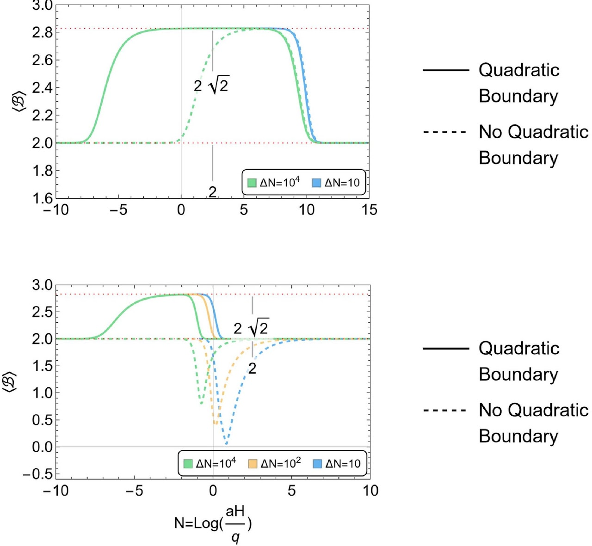

Quantum learning theory
Exactly solvable models of how quantum learning models change their feature geometry during training, including exact kernel statistics and convergence guarantees.
University of Pittsburgh
PhD Student in Computer Science
Quantum information · Learning theory · Physics of machine learning
I am a second-year PhD student in Computer Science at the University of Pittsburgh, advised by Prof. Junyu Liu. My work connects quantum information, machine learning, and theoretical physics. I study representation learning with quantum signal processing, scaling and renormalization in neural-network training, and quantum resources in cosmology and high-energy physics. I also explore quantum information processing with phononic systems, motivated by broader questions in continuous-variable quantum information.
Before Pitt, I received an MPhil in Physics from HKUST, advised by Prof. Yi Wang, and a BS in Physics from Nanjing University.
I am looking for Summer 2027 research internships in quantum computing, machine-learning theory, or quantitative research. Let’s get in touch.
Exactly solvable models of how quantum learning models change their feature geometry during training, including exact kernel statistics and convergence guarantees.
Scaling and renormalization-group descriptions of training phenomena such as grokking, connecting critical exponents to measurable training statistics.
Bell tests and decoherence of primordial fluctuations, and non-stabilizerness (magic) of fermion pairs produced in high-energy collisions.
Exploring quantum routing for QRAM and the characterization of quantum operations in circuit quantum acoustodynamics.
2026 · Preprint
An ensemble-based scaling and real-space renormalization framework for grokking, comparing predicted critical exponents with estimates from training statistics.
2026 · Preprint
A solvable model of representation learning, with exact kernel statistics and a sparse-data convergence guarantee for nonlinear gradient flow.
2026 · Review preprint
A survey of AI methods for quantum systems and quantum-information approaches to learning.
2024 · JCAP 10 (2024) 084
How interactions decohere primordial perturbations and remove Bell-inequality violation, with a Bell-test curve identifying a finite testing window.
The inflationary universe creates particle pairs, which are entangled in their momenta due to momentum conservation. Operators involving the momenta of the fluctuations can be rewritten into pseudo-spin operators, such as the Gour–Khanna–Mann–Revzen (GKMR) pseudo-spin. Making use of these pseudo-spin operators, cosmological Bell inequalities can be formulated. The violation of these Bell inequalities indicates the quantum nature of primordial fluctuations.
In this work, we focus on primordial curvature perturbations. Since curvature perturbations arise from gravity, their action includes the Gibbons–Hawking–York boundary term. We clarify the role of the boundary term in selecting suitable initial conditions for linear perturbations.
After that, we proceed to the interactions of cosmological perturbations, including the bulk and boundary interaction terms, which introduce decoherence effects. These decoherence effects change the expectation value of the Bell operator, and gradually restore the Bell inequality. We describe this process by a “Bell test curve”, which offers a window around 5 e-folds for testing the quantum origin of cosmological perturbations. We also explore the possibility of extracting the information of the decoherence rate and the structure of primordial interactions from the Bell test curve.

Contributed talk · COSMO-25 · Carnegie Mellon University, Pittsburgh · Oct 2025
Poster · 19th Asian Winter School on Strings, Particles and Cosmology · Sanya · Jan 2025
Contributed talk · Gravity and Cosmology 2024 · YITP, Kyoto · Jan 2024
Slides (PDF)Host: Daniel Carney · Sep–Dec 2024
Explored spin squeezing for atom-interferometric gravimetry.
Host: Tomotake Matsumura · Jul–Aug 2022
Optimization of achromatic wave plates for CMB polarimetry.
University of Pittsburgh · 2025–26
HKUST · 2024
Explanations, derivations, and notes on my work.
No notes yet.
Reading notes, questions, and ideas still taking shape.
No notes yet.
Department of Computer Science, University of Pittsburgh